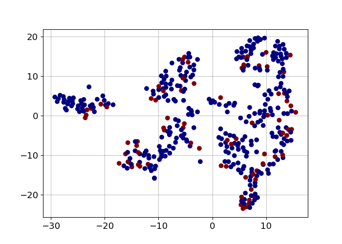
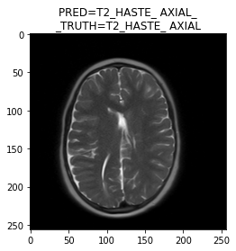
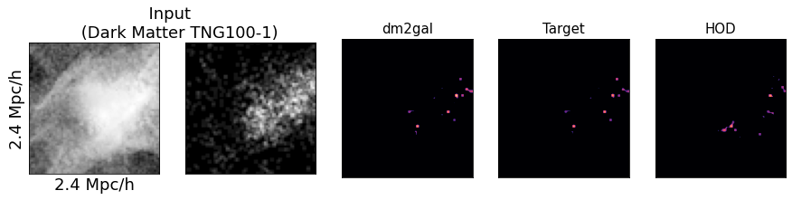

I am currently a research assistant at NYU Langone + The Center for Data Science. We hope to make deep neural networks capable of arbitrary objectives in modeling the properties of an MRI image, even when only a small number of labeled data exists. At the moment, we are exploring how the representations of our classes evolve throughout pre-training and semi-supervised learning might improve this. The image below shows the TSNE embedding of our classification labels, made by the embedding layer from a model trained via SimCLR for several epochs. We are encouraged to see some separation and clustering, but of course the ideal result is for the reds and blues to be what are separated, not some other latent feature. I am very interested in how this new representation came to be, and hope to learn from it why and how we can adjust our algorithms to make the reds and blues be what are implicitly learned during pre-training.
For more info on this and my other works, please check out the posts below.

A Practical DL-based Tool for Medical Image Specifications

I developed an automated method to classify brain MRIS based on image specifications like image sequence and plane of imaging. We employed a convolutional neural network to sort radiological imaging studies based on these image specifications. In the image above, you'll see one example of how this labeling works. Rather than examining the complicated metadata normally done by routing systems, our model classifies what kind of study this is based on nothing more than the individual MRI slice. In some cases, we even found our model corrected the ground truth label extracted from the DICOM metadata.

In recent years, there has been significant interest and progress in using deep learning to reconstruct cosmological simulations. While traditional methods take millions of CPU hours, machine learning models are capable of creating near identical simulations in a fraction of the time. In this work, I used a deep learning model to predict stellar mass from nothing except dark matter structure. In the image above, you can see an example of how our model was able to closely resemble what the ground truth density field would look, at a fraction of the compute time. Side by side with this are what inputs we used, and what the current benchmark, known as the halo-occupation-distribution (HOD) came up with.
I am proud to announce this work was accepted to the 2020 Machine Learning and Physical Science workshop at NeurIPS 2020!! You can find this work here

The discovery of gravitational waves has ushered in a new era of astronomy. Tied to this discovery is the potential for multi-messenger astronomy, or the observation of this phenomena in the form of graviational waves, and in the form of electromagnetic radiation. This is just one part of the science mission of BurstCube, a cubesat for gamma-ray bursts. In my time working on BurstCube, I created a simulation from scratch to assess different detector orientations, and determine what setting is most suitable for BurstCube's science.